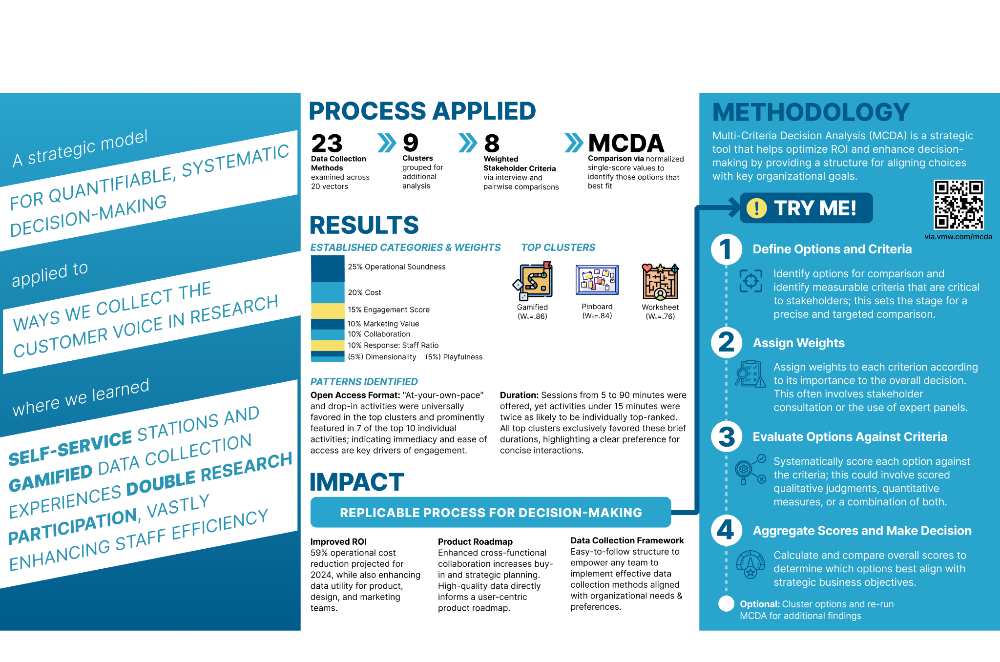
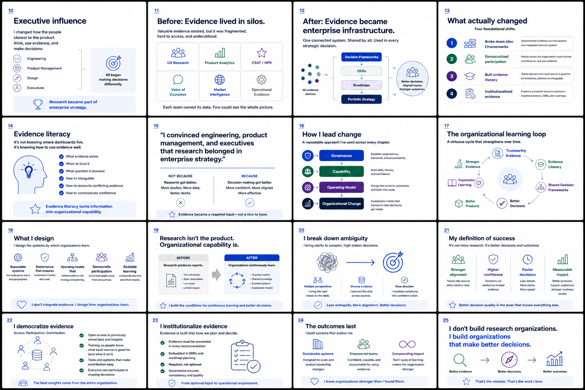
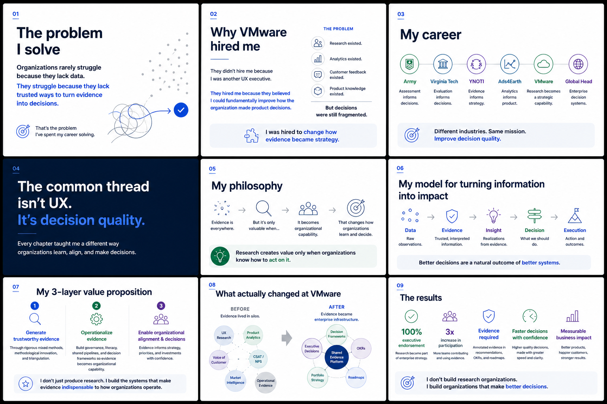

Evaluation scientist · Research executive · Experience strategist
Organizations rarely struggle because they lack data.
They struggle because they lack trusted ways to turn evidence into decisions.
I design the systems by which organizations learn, align, and decide — bringing together human insight, business context, operational realities, and technical evidence to improve decision quality.
Philosophy
Better products are usually the result of better organizational decisions.
The hardest part is rarely finding more information. It is building a trusted way to decide what deserves action.
My career has moved through the Army, academia, startups, consulting, and enterprise technology. The context changed. The work remained remarkably consistent: reduce ambiguity, improve the quality of evidence, and help people act with greater confidence.
Research is not the product.
The decision is. Research creates value only when organizations know how to interpret it, challenge it, and use it.
Evidence should be organizational infrastructure.
Not a report owned by one function, but a shared capability that supports planning, strategy, and execution.
Rigor and engagement are not opposites.
The most trustworthy work often emerges when people are deeply engaged in making sense of complex questions together.
Methods
Developing better ways to generate trustworthy evidence.
Sometimes the existing method isn’t wrong. It is just answering the wrong question.
23
collection methods evaluated and operationalized within one enterprise research system
Featured method
Design With Us
A participatory research system that transformed conference engagement into a scalable source of high-quality evidence and actionable product direction.
98% engagement1,200+ participants
Engagement wasn’t the reward for rigor. It was part of how we achieved it.
Framework
GAME Framework
A model for increasing research impact through engagement, agility, methodological innovation, and enterprise relevance.
See the DiscoConf talk →Decision framework
Multi-Criteria Decision Analysis
A structured prioritization system that makes research tradeoffs visible, explicit, and defensible.

The goal wasn’t to eliminate judgment. It was to make judgment visible.
Methodological innovation
Arts-Based Research
Creative elicitation methods designed to improve participant engagement, evidence richness, and strategic usefulness without compromising rigor.
Open poster PDF →Visualization
Dichotomous Slope Graph
A structured way to transform participant-generated journey data into a quantitative representation of change over time.
Operating model
Enterprise Evidence System
Governance, evidence literacy, and shared practices that moved research from a service function into strategic organizational infrastructure.
Work
Different domains. One recurring challenge.
Every chapter added a different capability. Together, they changed how I approach complex decisions.
6
major domains shaped by the same focus on decision quality
Leadership under pressure
Execution, communication, and decision-making in high-stakes, multinational environments.
Evaluation science
Longitudinal measurement, multi-site evaluation, capability development, and methodological rigor.
Research strategy
Grant evaluation, workforce development, and organizational transformation.
Machine learning evaluation
Evaluation frameworks integrating behavioral, operational, and customer evidence.
Enterprise transformation
Research became strategic infrastructure for product, portfolio, and executive decision-making.
AI, evaluation, and organizational learning
Exploring how organizations define quality, evaluate emerging capability, and build trust in complex systems.
Writing
Ideas for organizations navigating complexity.
I write to make difficult problems easier to see, not to make them sound simpler than they are.
Is Art the Future of UX Research?
Why creative methods can increase both engagement and research value.
Read article →Why evaluation shapes what organizations optimize
Draft concept for a future essay on benchmarks, incentives, and decision quality.
Research as organizational infrastructure
Draft concept for a future essay on moving beyond the research service model.
Research
A scholar-practitioner record across evaluation, STEM, technology, and enterprise research.
The discipline stayed consistent even as the object of study changed.
30+
peer-reviewed, invited, technical, and public-facing publications
How the introduction of content relates to performance in a middle school modeling and simulation environment
Bowen, B. & Peterson, B.
Coloring Outside the Lines: Exploring the Potential for Integrating Creative Evaluation in Engineering Education
Edwards, C. D., Peterson, B., Bhaduri, S., McCall, C. J., & Özkan, D. S.
Evaluating a Large-Scale Multi-Institution Project: Challenges Faced and Lessons Learned
Slate Young, E., Peterson, B., Schott, S., & Bookman, J.
Building STEM career interest through career-connected curriculum treatments
Peterson, B.
Speaking
Translating complex ideas into conversations people can use.
A good presentation does more than explain an idea. It changes what the room is able to discuss.
11K+
registrants for a featured Maze DiscoConf presentation

VMware RADIOThought leadership on research, evidence, and organizational impact
Short video clips can be placed here once added to assets/video/.

Maze DiscoConf 2024The GAME Framework
Presented to 11,000+ registrants on engagement, agility, and innovation in research practice.
Podcast
Enterprise Design Podcast
UX Research at Enterprise Organizations
A conversation about aligning research with business strategy in complex enterprise environments.
SME
Maze State of UX Research 2025
Future trends in product decision-making
Contributed subject matter expertise on the changing role of research and evidence.
About
I build systems that help organizations learn together.
I am most useful where complexity, competing perspectives, and consequential decisions meet.
My path has taken me through military leadership, academic research, consulting, startups, and enterprise technology. Each chapter added a different capability: execution, rigor, adaptation, scale, and organizational influence.
I am most energized by roles where I can shape strategy, build leadership capability, mentor teams, and improve how evidence enters consequential product and business decisions.